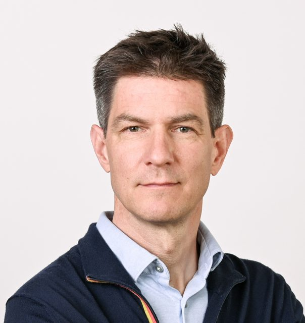

August Hämmerli
Biologist and philosopher of science
I hold doctorates in evolutionary genetics and in philosophy. My philosophical research asks how pseudosciences manage to look scientific – a phenomenon I call science mimicry. I am also interested in environmental ethics.
I teach ethics and philosophy of biology at the University of Bern and work at Infonatura on environmental impact assessments and environmental education.
Research
Science mimicry
Pseudosciences borrow the outward signs of science: technical vocabulary, charts, references, titles. In my doctoral thesis The evolution of science mimicry (University of Bern, 2026) I use the biological concept of mimicry to explain how pseudosciences appear scientific. Together with colleagues I test empirically which features make people judge a message as scientific.
Environmental ethics
Trained as an evolutionary biologist and working in environmental impact assessment, I am interested in how values enter decisions about nature and the environment.
Publications
Philosophy of science
- Hämmerli, A. (2026). The evolution of science mimicry. PhD thesis, University of Bern. BORIS
- Hämmerli, A., Beisbart, C., Grüning, D. & Reuter, K. (2025). The illusion of credibility: How the pseudosciences appear scientific. Proceedings of the Annual Meeting of the Cognitive Science Society 47. Open access
- Egg, M. & Hämmerli, A. (2024). Running mice and successful theories: The limitations of a classical analogy. Journal for General Philosophy of Science 55(3): 309–326. doi:10.1007/s10838-023-09664-3
Biology and other fields
- Hämmerli, A., Schweisgut, C. & Kaegi, M. (2012). Genetic segmentation of MHC correlated perfume preferences. International Journal of Cosmetic Science 34: 161–168. doi:10.1111/j.1468-2494.2011.00696.x
- Hämmerli, A., Waldhuber, S., Miniaci, C., Zeyer, J. & Bunge, M. (2007). Local expansion and selection of soil bacteria in a glacier forefield. European Journal of Soil Science 58: 1437–1445. doi:10.1111/j.1365-2389.2007.00948.x
- Hämmerli, A., Gattiker, R. & Weyermann, R. (2006). Conflict and cooperation in an actors’ network of Chechnya based on event data. Journal of Conflict Resolution 50(2): 159–175.
- Reusch, T. B. H., Ehlers, A., Hämmerli, A. & Worm, B. (2005). Ecosystem recovery after climatic extremes enhanced by genotypic diversity. PNAS 102(8): 2826–2831.
- Hämmerli, A. & Reusch, T. B. H. (2003). Flexible mating: cross-pollen affects sex-expression in a marine clonal plant. Journal of Evolutionary Biology 16: 1096–1105. doi:10.1046/j.1420-9101.2003.00626.x
- Hämmerli, A. & Reusch, T. B. H. (2003). Genetic neighbourhood of clone structures in eelgrass meadows quantified by spatial autocorrelation of microsatellite markers. Heredity 91: 448–455.
- Hämmerli, A. & Reusch, T. B. H. (2003). Inbreeding depression influences genet size distribution in a marine angiosperm. Molecular Ecology 12: 619–629. doi:10.1046/j.1365-294X.2003.01766.x
- Hämmerli, A. & Reusch, T. B. H. (2002). Local adaptation and transplant dominance in genets of the marine clonal plant Zostera marina. Marine Ecology Progress Series 242: 111–118.
- Hämmerli, A. (2002). Evolutionary genetics of eelgrass clones in the Baltic Sea. PhD thesis, University of Kiel / Max Planck Institute for Limnology, Plön.
Teaching
Since 2023 – University of Bern. Lectures in Ethics and Philosophy of Biology for biology and pharmacy students: evolution, values and science, theories and models, causation.
Outreach
- 2027–2028 – «OMG», Natural History Museum Bern. Interviewee in the special exhibition and guided tours in the series «OMG mit anderen Augen»: What distinguishes knowledge from belief?
- 2026 – Mountain Wilderness Switzerland. Advice on the ethical foundations of the organisation.
Curriculum vitae
Positions
- Since 2023
- Lecturer, Ethics and Philosophy of Biology, University of Bern
- 2023–2026
- Doctoral researcher in philosophy of science (Beisbart group), University of Bern
- Since 2011
- Infonatura: environmental impact assessments and environmental education (including the environmental impact assessment for the alpine solar plant Schwandfäl, Adelboden, 2023–2024)
- 2011–2018
- Founder, JellyAquatics GmbH (sold to Econlux GmbH, Cologne, 2012); board member, Equal Education Fund
- 2010–2012
- Head of a CTI project in population genetics (Hempel group), ETH Zurich
- 2007–2012
- Co-founder, Basisnote AG, Bern
- 2005–2007
- Postdoctoral researcher in microbiology (Zeyer group), ETH Zurich
- 2004–2005
- Computer modelling of reporter networks, swisspeace, Bern
- 2003–2004
- Postdoctoral researcher in computational genomics (Wagner Lab), Yale University, USA; visiting scientist, CNR Verbania, Italy
- 2000–2003
- Doctoral researcher in evolutionary biology (Reusch group), Max Planck Institute for Limnology, Plön, Germany
Education
- 2026
- PhD in Philosophy, University of Bern
- 2023
- Master in Philosophy of Science, University of Bern
- 2007
- CAS in Science Journalism, MAZ, Lucerne
- 2002
- PhD in Biology, University of Kiel (Max Planck Institute for Limnology, Plön)
- 1999
- Diploma in Biology, University of Bern (field research in Sabah, Malaysia)
Awards and grants
- 2002 – Otto Hahn Medal of the Max Planck Society
- 2002 – Wilhelmshaven Prize for Marine Research
- Swiss National Science Foundation grant (2006) and two CTI grants (2007–2012)